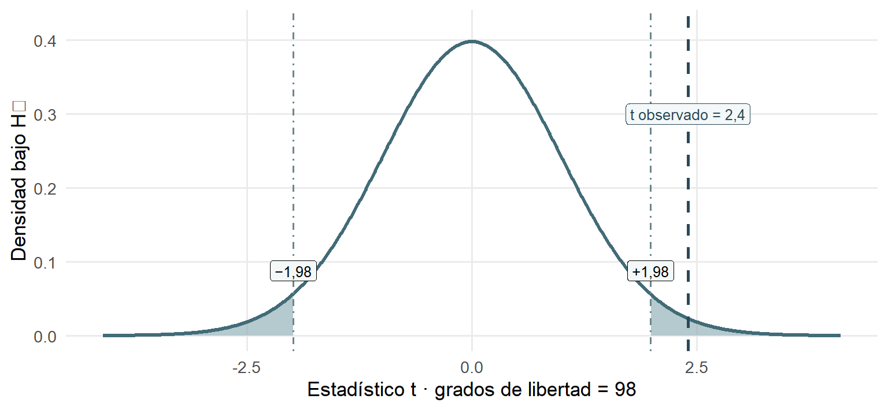

Repaso Unidad 1: resolver problemas con inferencia estadística
Sesión del miércoles, 4 de noviembre de 2026
Inicio · ¿Qué recordamos de la inferencia estadística?
La inferencia estadística utiliza información de una muestra para evaluar afirmaciones sobre una población, considerando la incertidumbre. En esta sesión trabajaremos tres problemas de comparación de promedios mediante los cinco pasos de inferencia. Todos los datos son ficticios.
Cómo trabajar: primero identifica qué plantea cada pregunta antes de consultar las medias. Después utiliza los datos y las fórmulas de apoyo para resolver los cinco pasos; abre la resolución o pauta solo después de tu intento.
Al final encontrarás un cuarto ejercicio opcional para estudio autónomo. No está previsto para los 90 minutos de clase: puedes resolverlo posteriormente con las pistas y la pauta disponibles.
Ejercicio 1 · Pertenencia universitaria y participación en grupos de estudio
Pregunta de investigación
¿Difieren los promedios poblacionales de pertenencia universitaria entre estudiantes que participan y no participan en grupos de estudio?
Se encuestó a 100 estudiantes, 50 por grupo. La pertenencia universitaria se mide en una escala de 0 a 100.
Grupo 1
Participan en grupos de estudio.
Grupo 2
No participan en grupos de estudio.
Orden de la resta: grupo 1 − grupo 2. Usaremos este orden para interpretar el signo.
Intenta resolver
Antes de consultar las medias. A partir de la pregunta de investigación, escribe en una frase si interesa cualquier diferencia o una diferencia en un sentido específico. Anota tu planteamiento en palabras, sin formular todavía las hipótesis estadísticas.
Datos disponibles
Se comparan dos grupos independientes y se suponen varianzas poblacionales iguales. El error estándar de la diferencia (SE) ya está calculado.
| Información | Valor |
|---|---|
| Promedio muestral del grupo 1 (\(\bar{x}_1\)) | 68 |
| Promedio muestral del grupo 2 (\(\bar{x}_2\)) | 56 |
| Error estándar de la diferencia (SE) | 5 |
| Tamaños y grados de libertad | \(n_1=n_2=50\); \(gl=98\) |
El análisis se planificó con \(\alpha=0{,}05\) antes de observar los resultados; compararemos además con \(\alpha=0{,}01\) como ejercicio didáctico.
Valores críticos de referencia (\(gl=98\)). Elige la fila y, si corresponde, el signo según la alternativa que anotaste antes de consultar los datos.
| Tipo de contraste | \(\alpha=0{,}05\) | \(\alpha=0{,}01\) |
|---|---|---|
| Dos colas | \(\pm1{,}98\) | \(\pm2{,}63\) |
| Una cola | Magnitud \(1{,}66\) | Magnitud \(2{,}37\) |
Fórmulas de apoyo
Diferencia entre promedios
\[ \hat\Delta=\bar{x}_1-\bar{x}_2 \]
Estadístico t
\[ t=\frac{\hat\Delta}{SE_{\hat\Delta}} \]
Intervalo de confianza bilateral
\[ IC=\hat\Delta\pm(t^*\times SE_{\hat\Delta}) \]
¿Qué representa cada símbolo?
- \(\bar{x}_1\): promedio muestral del grupo 1.
- \(\bar{x}_2\): promedio muestral del grupo 2.
- \(\hat\Delta\): diferencia entre los promedios muestrales (\(\bar{x}_1-\bar{x}_2\)).
- \(SE_{\hat\Delta}\): error estándar de esa diferencia; ya está entregado en la tabla.
- \(t^*\): valor crítico positivo que corresponde al intervalo, según su nivel de confianza y grados de libertad.
Para calcular \(t\) en estos ejercicios, la diferencia de referencia de la hipótesis nula es cero.
Los cinco pasos
Paso 1 · Hipótesis y dirección. Traduce tu planteamiento inicial a \(H_0\) y \(H_A\) con \(\mu_1-\mu_2\). Justifica el contraste correspondiente.
Paso 2 · Estadístico empírico. Calcula la diferencia muestral y \(t\) utilizando el SE. Interpreta su signo y magnitud.
Paso 3 · \(\alpha\) y valor crítico. Selecciona los valores críticos y formula la regla de decisión, sin aplicarla todavía.
Paso 4 · Contraste e intervalo. Aplica la regla al 5% y compara con el 1%. Construye el IC95% y examina si incluye cero.
Paso 5 · Interpretación. Distingue lo observado en la muestra de la conclusión poblacional e identifica una limitación causal.
Resolución guiada
Ejercicio 2 · Notificaciones del celular y concentración al estudiar
Pregunta de investigación
¿Existen diferencias en la concentración autopercibida al estudiar entre estudiantes con notificaciones del celular activadas y quienes las silencian?
Se encuestó a 100 estudiantes, 50 por grupo. La concentración se mide de 0 a 100; valores altos indican mayor concentración declarada. Suponemos grupos independientes y varianzas iguales.
Grupo 1 · Notificaciones activadas
Grupo 2 · Notificaciones silenciadas
Orden de la resta: grupo 1 − grupo 2.
Intenta resolver
Antes de consultar las medias. Relee la pregunta y anota en palabras qué diferencia se quiere investigar y si se plantea algún sentido específico. No formules todavía las hipótesis con símbolos.
Datos disponibles
Se comparan dos grupos independientes y se suponen varianzas poblacionales iguales. El SE de la diferencia ya está calculado.
| Información | Valor |
|---|---|
| Promedio muestral · grupo 1 (notificaciones activadas, \(\bar{x}_1\)) | 54 |
| Promedio muestral · grupo 2 (notificaciones silenciadas, \(\bar{x}_2\)) | 64 |
| SE de la diferencia | 4 |
| Tamaños y grados de libertad | \(n_1=n_2=50\); \(gl=98\) |
El análisis se planificó con \(\alpha=0{,}05\) antes de observar los resultados; compararemos además con \(\alpha=0{,}01\) como ejercicio didáctico.
Valores críticos de referencia (\(gl=98\)). Elige la fila y, si corresponde, el signo según la alternativa que anotaste antes de consultar los datos.
| Tipo de contraste | \(\alpha=0{,}05\) | \(\alpha=0{,}01\) |
|---|---|---|
| Dos colas | \(\pm1{,}98\) | \(\pm2{,}63\) |
| Una cola | Magnitud \(1{,}66\) | Magnitud \(2{,}37\) |
Fórmulas de apoyo
\[ \hat\Delta=\bar{x}_1-\bar{x}_2 \]
\[ t=\frac{\hat\Delta}{SE_{\hat\Delta}} \]
\[ IC=\hat\Delta\pm(t^*\times SE_{\hat\Delta}) \]
Para el intervalo bilateral, utiliza el crítico positivo que corresponda al nivel de confianza, no necesariamente el de una prueba de una cola.
Los cinco pasos
Paso 1 · Hipótesis y dirección. Escribe \(H_0\) y \(H_A\) con \(\mu_1-\mu_2\) a partir de la alternativa que anotaste antes de ver las medias.
Paso 2 · Estadístico empírico. Calcula la diferencia muestral y \(t\). Interpreta el signo.
Paso 3 · \(\alpha\) y valor crítico. Selecciona los críticos al 5% y al 1% y establece la regla de decisión.
Paso 4 · Contraste e intervalo. Contrasta \(t\) al 5% y al 1%; construye el IC95% bilateral e identifica si incluye cero.
Paso 5 · Interpretación. Describe la diferencia muestral, concluye sobre la población y señala una limitación causal.
Pistas y pauta
Ejercicio 3 · Tutorías académicas y confianza ante evaluaciones
Pregunta de investigación
¿El promedio de confianza para enfrentar evaluaciones es mayor entre estudiantes con tutorías académicas que entre estudiantes sin tutorías?
Se estudian 100 estudiantes, 50 por grupo. La confianza para enfrentar evaluaciones se expresa mediante un índice de 0 a 10, donde los valores más altos representan mayor confianza declarada.
Grupo 1
Participan en tutorías académicas.
Grupo 2
No participan en tutorías académicas.
Orden de la resta: grupo 1 − grupo 2.
Intenta resolver
Antes de consultar las medias. Expresa en palabras qué plantea la pregunta acerca de los dos grupos. Anota el sentido de esa afirmación, sin utilizar todavía símbolos ni resultados numéricos.
Datos disponibles
Se comparan dos grupos independientes y se suponen varianzas poblacionales iguales. El SE de la diferencia ya está calculado.
| Información | Valor |
|---|---|
| Promedio muestral del grupo 1 (\(\bar{x}_1\)) | 6,7 |
| Promedio muestral del grupo 2 (\(\bar{x}_2\)) | 6,0 |
| SE de la diferencia (puntos del índice) | 0,4 |
| Tamaños y grados de libertad | \(n_1=n_2=50\); \(gl=98\) |
El análisis se planificó con \(\alpha=0{,}05\) antes de observar los resultados; compararemos además con \(\alpha=0{,}01\) como ejercicio didáctico.
Valores críticos de referencia (\(gl=98\)). Elige la fila y, si corresponde, el signo según la alternativa que anotaste antes de consultar los datos.
| Tipo de contraste | \(\alpha=0{,}05\) | \(\alpha=0{,}01\) |
|---|---|---|
| Dos colas | \(\pm1{,}98\) | \(\pm2{,}63\) |
| Una cola | Magnitud \(1{,}66\) | Magnitud \(2{,}37\) |
Fórmulas de apoyo
\[ \hat\Delta=\bar{x}_1-\bar{x}_2 \]
\[ t=\frac{\hat\Delta}{SE_{\hat\Delta}} \]
El error estándar de la diferencia ya está incluido en los datos.
Los cinco pasos
Paso 1 · Hipótesis y dirección. Formula \(H_0\) y \(H_A\) con \(\mu_1-\mu_2\) a partir de tu planteamiento previo y justifica la dirección.
Paso 2 · Estadístico empírico. Calcula la diferencia muestral y \(t\) utilizando el SE.
Paso 3 · \(\alpha\) y valor crítico. Selecciona el valor crítico apropiado y formula la regla al 5%, sin aplicarla todavía.
Paso 4 · Contraste. Aplica la regla al 5% y compara con la referencia del 1%.
Paso 5 · Interpretación. Concluye sobre los promedios poblacionales y reconoce una limitación causal.
Resolución guiada
Cierre de la sesión · ¿Qué aprendimos de los tres problemas?
La pregunta formulada antes de observar los resultados determina el contraste. Si buscamos cualquier diferencia entre promedios, utilizamos una prueba de dos colas. Si la pregunta plantea una dirección específica, utilizamos una prueba de una cola y evaluamos el extremo correspondiente de la distribución. En ambos casos seguimos los mismos cinco pasos de inferencia.
Observa el esquema: izquierda corresponde a «primer promedio menor»; derecha, a «primer promedio mayor». En ambas situaciones usamos la resta grupo 1 − grupo 2.
| Pregunta previa | Hipótesis alternativa | Región de rechazo al 5% (\(gl=98\)) |
|---|---|---|
| ¿Son diferentes? | \(\mu_1-\mu_2\neq0\) | \(t<-1{,}98\) o \(t>1{,}98\) |
| ¿Es mayor el primero? | \(\mu_1-\mu_2>0\) | \(t>1{,}66\) |
| ¿Es menor el primero? | \(\mu_1-\mu_2<0\) | \(t<-1{,}66\) |
Pregunta de salida. Una investigación pregunta si dos promedios son diferentes. Después de observar la muestra, el promedio del grupo 1 resulta menor. ¿Sería correcto cambiar a una prueba de una cola izquierda porque la diferencia observada es negativa? ¿Por qué?
Dos ideas para cerrar: no rechazar \(H_0\) no demuestra igualdad; una diferencia estadísticamente significativa no implica causalidad.
Ejercicio 4 · Práctica opcional para estudio autónomo
Trabajo remunerado y tiempo de estudio. Esta actividad es opcional y no está prevista para desarrollarse durante los 90 minutos de clase. Puedes resolverla posteriormente para practicar los cinco pasos con mayor autonomía. Intenta responder antes de consultar las pistas y la pauta.
Pregunta de investigación
¿El promedio de horas semanales de estudio individual es menor entre estudiantes que trabajan durante el semestre que entre quienes no trabajan?
Se encuestó a 100 estudiantes, 50 por grupo, y se registraron sus horas semanales de estudio individual. Suponemos grupos independientes y varianzas iguales.
Grupo 1
Trabajan durante el semestre.
Grupo 2
No trabajan durante el semestre.
Orden de la resta: grupo 1 − grupo 2.
Intenta resolver
Antes de consultar las medias. Escribe en palabras qué comparación plantea la pregunta y cuál sería el sentido de la diferencia investigada. No consultes aún los promedios ni formules las hipótesis simbólicas.
Datos disponibles
Se comparan dos grupos independientes y se suponen varianzas poblacionales iguales. El SE de la diferencia ya está calculado.
| Datos disponibles | Valor |
|---|---|
| Promedio muestral del grupo 1 (horas) | 11 |
| Promedio muestral del grupo 2 (horas) | 15 |
| SE de la diferencia (horas) | 2 |
| Tamaños y grados de libertad | \(n_1=n_2=50\); \(gl=98\) |
El análisis se planificó con \(\alpha=0{,}05\) antes de observar los resultados; compararemos además con \(\alpha=0{,}01\) como ejercicio didáctico.
Valores críticos de referencia (\(gl=98\)). Elige la fila y, si corresponde, el signo según la alternativa que anotaste antes de consultar los datos.
| Tipo de contraste | \(\alpha=0{,}05\) | \(\alpha=0{,}01\) |
|---|---|---|
| Dos colas | \(\pm1{,}98\) | \(\pm2{,}63\) |
| Una cola | Magnitud \(1{,}66\) | Magnitud \(2{,}37\) |
Fórmulas de apoyo
\[ \hat\Delta=\bar{x}_1-\bar{x}_2 \]
\[ t=\frac{\hat\Delta}{SE_{\hat\Delta}} \]
Los cinco pasos
Paso 1 · Hipótesis y dirección. Traduce tu afirmación inicial a \(H_0\) y \(H_A\) utilizando los promedios poblacionales.
Paso 2 · Estadístico empírico. Calcula la diferencia muestral y \(t\); interpreta el signo.
Paso 3 · \(\alpha\) y valor crítico. Selecciona el crítico y establece la regla de decisión al 5%.
Paso 4 · Contraste. Aplica la regla al 5% y compara con el 1%. Justifica tus decisiones.
Paso 5 · Interpretación. Redacta una conclusión poblacional y señala una limitación causal.